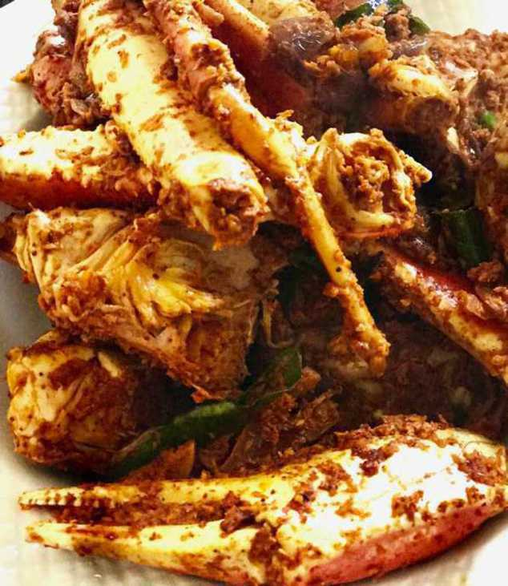

                                    <figure class="cards double">
                                        <figcaption class="caption">
                                            <h1><span style="color: #db4b31;"><strong>Crab Masala</strong></span></h1> 
                                            <p><strong>Ingredients</strong></p><ul><li>Crab: 3 Large Crabs &ndash; Cut and cleaned</li><li>Chilli powder 4tbsps (or as per spice intake)</li><li>Turmeric &frac12; tsp</li><li>Coriander powder 3tbsps</li><li>Green Chilli 5 nos sliced lengthwise</li><li>Ginger thinly sliced 1tbsp</li><li>Onion 2 large &ndash; long thin slices</li><li>Garlic &ndash; 4 large pods</li><li>Curry leaf &ndash; about 5 or 6 sprigs</li><li>Salt as per taste</li><li>Oil &ndash; 2 tbsps</li></ul><p><strong>Method</strong>&nbsp;</p><p>In a large pot, cover and cook the crab with 2tbsps chilli powder, turmeric, salt, few curry leaves and water. The quantity of water should be half the level of crabs in the pot. Cook for about 10 minutes. Uncover the pot and cook but make sure there is some water left in the pot.</p><p>In a large wok add oil and on high heat saute the onions, ginger, green chilli, garlic and curry leaf.</p><p>Add the remaining chilli powder, coriander powder and some salt. Add more spices if needed. Add in the crab and saute well &nbsp;for about 10 minutes and make sure the crab gets coated with all the masala. Garnish with curry leaves.</p>
                                        </figcaption>
                                        